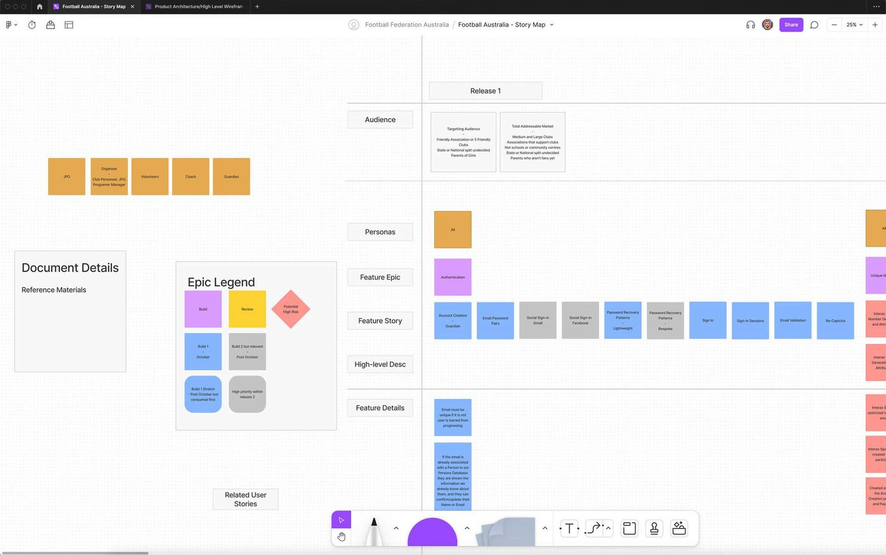
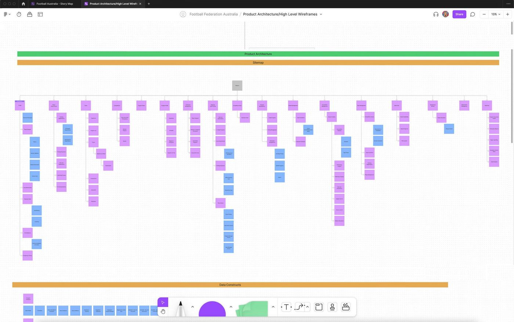
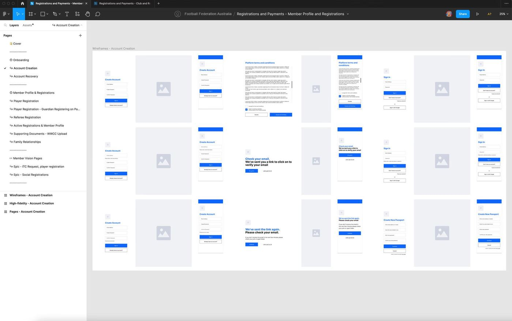
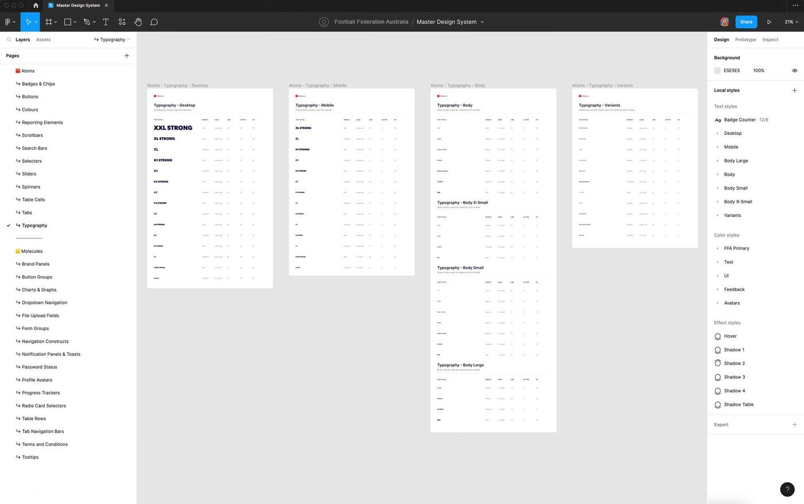
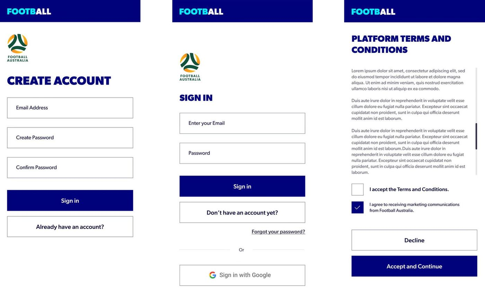
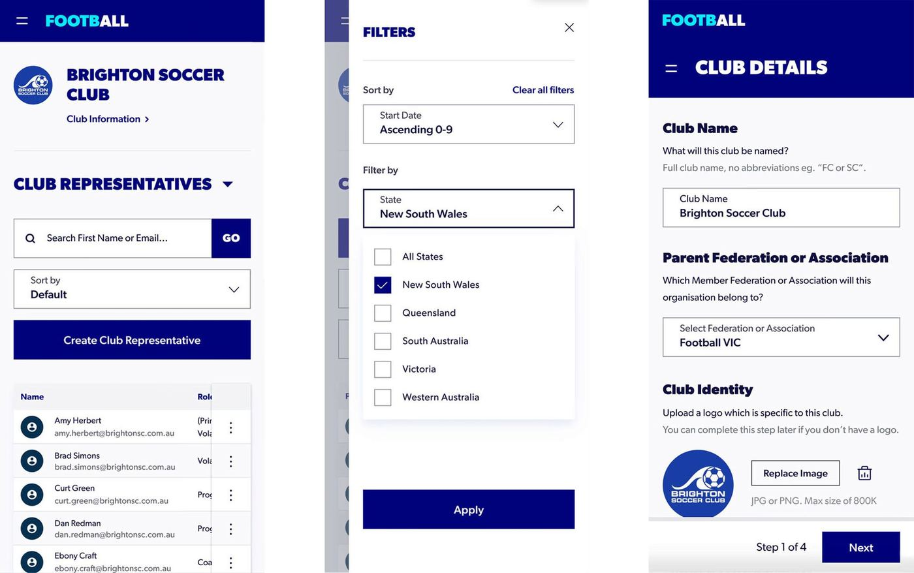
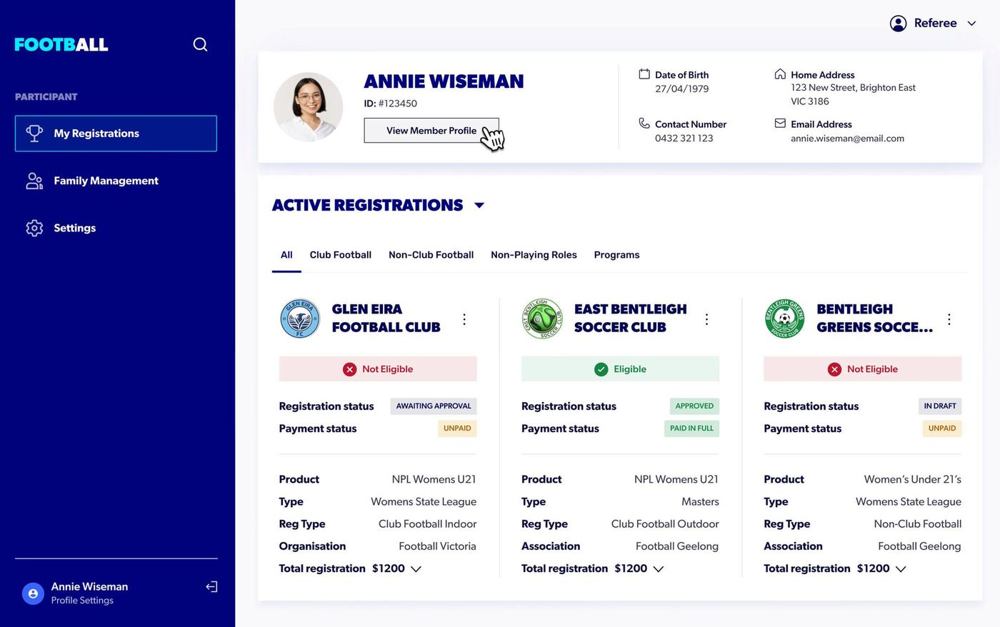
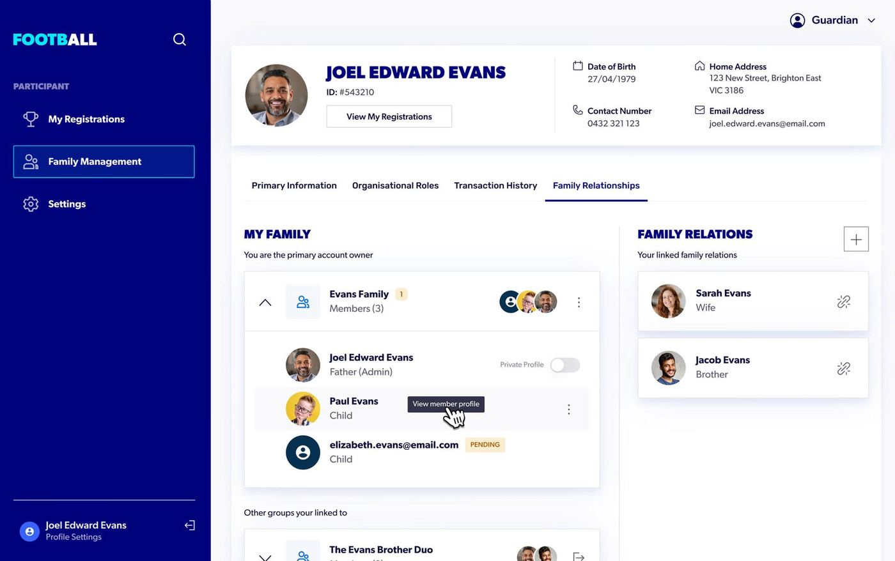
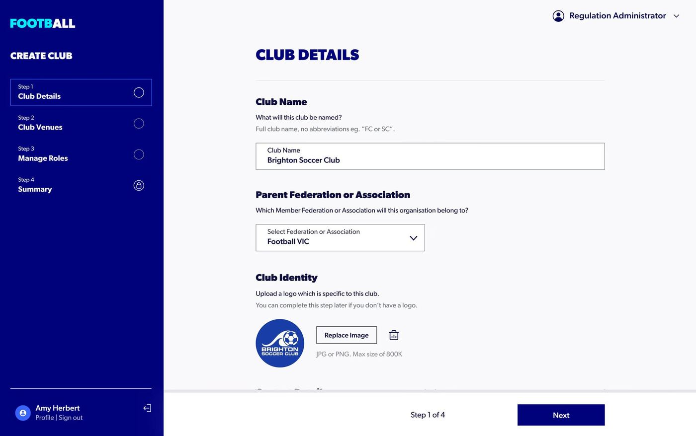
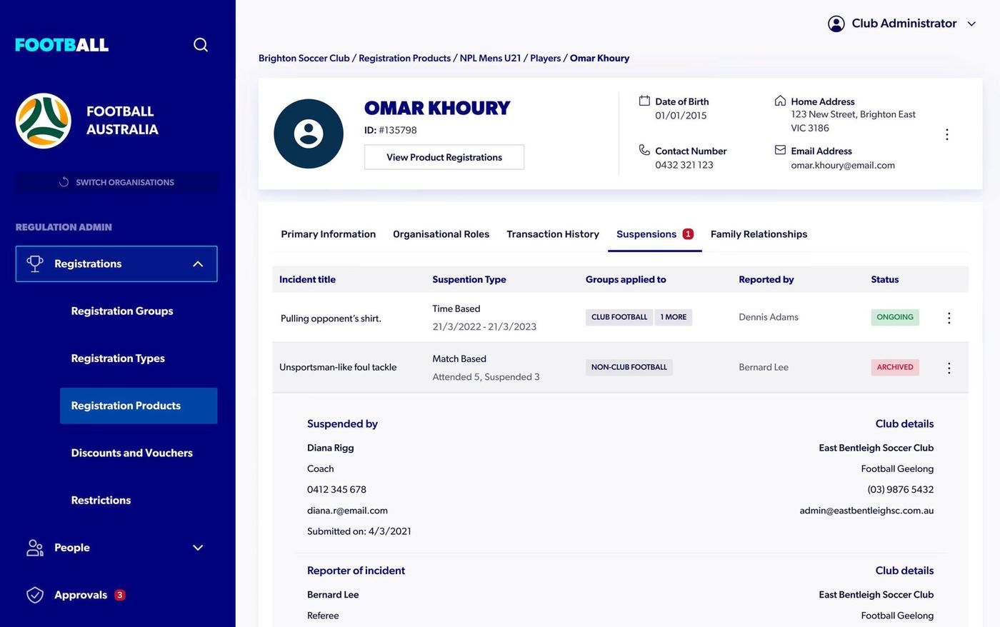

A registration and payment platform built to manage every kind of participant across a national sporting body.
Football Australia is the governing body of football in Australia and a member of FIFA, the international governing body for football. With a national participation community of around 1.9 million people spanning players, coaches, referees, and clubs, ensuring seamless registration and payment processing across the entire ecosystem is critical to the integrity and prosperity of the sport.
 Live preview
Live preview
Football Australia and its Member Federations faced an ongoing issue of lost revenue due to unpaid regulation fees each year. Many clubs were bypassing the official Football Australia platform entirely, handling their own registration and payment processes independently. This led to mismanaged fees, ineligible players participating in matches, and real risks to governance and compliance with FIFA regulations.
At the same time, parents and guardians registering their children found the existing system cumbersome and confusing. It relied heavily on email notifications to communicate registration status, eligibility, and payment information, leaving users without a clear, centralised view of where things stood. Participants managing multiple registrations across different clubs, leagues, and programs had no single place to track approval status, eligibility, and payment information, they were reliant on a fragmented chain of club emails, payment links, and approval notifications that regularly caused confusion and errors. The result was frustration, errors in player eligibility, and an ongoing burden on club administrators to manage enquiries and resolve issues manually.
A new platform was needed, one that could centralise registrations, enforce governance rules, reduce revenue leakage, and give every user, whether a parent, player, club admin, or federation, a clear and intuitive experience.
The primary objective was to build a reputable, user-friendly national platform embraced and adopted by Member Federations, Associations, Clubs, and other providers.
The platform needed to:

An early round of research and discovery.

A sitemap mapping the user journey and flow.

Wireframes for desktop and mobile.

The design system ecosystem.
I was contracted through SixSix, a design agency, working alongside Versent, who provided engineering and development, to deliver this project for Football Australia. While the design team itself was small, just three of us, the project was large in scope, built by a wider team that included Versent's 15-person development and engineering group, the largest I've collaborated with across my career.
Each of the three designers owned our own sections and features within the platform. Together we built a comprehensive design system on atomic design principles, the most extensive one I've worked on to date, with accessibility built in as a core requirement from the start rather than an afterthought.
My contributions included:
As with many large digital transformation projects, requirements evolved as stakeholders aligned on commercial, technical, and user needs. This meant adapting quickly to shifting priorities while maintaining a strong user experience focus, and it shortened the research and discovery phase, requiring the design team to work closely with stakeholders to clarify requirements and stay aligned throughout the project. Particular attention was given to simplifying the experience for parents and guardians, ensuring a seamless and intuitive process when registering multiple children across different clubs and programs.
Partway through, budget cuts led Versent to scale back their involvement, and their BA came off the project entirely. The design team absorbed project management responsibilities that had previously belonged to the BA, on top of an already substantial design workload, meaning fewer dedicated resources at exactly the point where demand and expectations hadn't changed. Balancing that expanded scope, effectively project managing while still delivering research, design, and a growing design system, required being deliberate about where our time went.

Mobile designs for onboarding.

Mobile designs for club information.

Desktop design for active registrations.

Desktop design for family management.

Desktop design for club creation.

Desktop design for player profiles.
The design work was completed and validated with stakeholders through early 2023, with our design system, validated flows, and annotated handover documentation forming the foundation for what was built and launched nationally in 2024.
Throughout the design phase, stakeholder feedback was consistently positive. Testing confirmed the registration dashboard significantly improved users' ability to understand their status and take action without needing to contact their club for support, reducing reliance on manual or in-person registration assistance and resulting in fewer support enquiries from parents and clubs. Higher engagement with the registration system and increased completion of payments and registrations online reflected the clarity and usability the team had worked to achieve.
The platform was designed to deliver what the existing system couldn't: centralised registrations, real-time payment collection, improved governance, and a genuinely simpler experience for parents, players, clubs, and federations across Australia.
Despite evolving requirements, a compressed discovery phase, and a mid-project reduction in team resources, the design team delivered a comprehensive national platform, complete with an extensive atomic design system, validated user flows, and accessibility built in throughout. It was the largest and most complex project I've worked on, and it reinforced how to lead design at scale while absorbing responsibilities well beyond a typical design remit.
Here are a few other projects to explore.